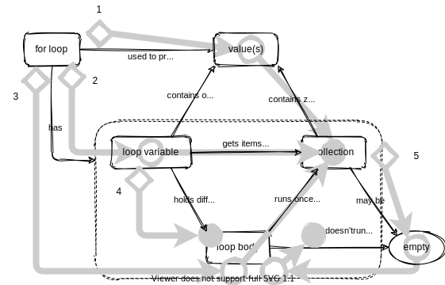

Lesson Maps
One of the silver linings of unemployment is that
it has given me time to explore a few ideas
that have been living rent-free in my head for a while,
like adapting use case maps for lesson design.
Here’s a concept map for a for loop in a language like Python:
This shows what the lesson is going to cover, but doesn’t explain how. The latter is inherently sequential, so let’s trace the order in which ideas would be introduced:

The gray overlay shows that the lesson introduces the ideas in the following order:
-
A
forloop is used to process the values in a collection. -
A
forloop has a loop variable, which gets items from the collection one by one. -
The loop also has a body, which is run once for each item in the collection.
-
The loop variable holds a different value each time the loop body runs.
-
The collection may be empty, in which case the loop body doesn’t run.
The diamonds show the start of a stanza (i.e, a paragraph or sub-topic). The solid circles show the ends of stanzas, while the open circles show where the flow of the lesson passes through an idea.
This isn’t the only way to teach loops: many other orderings would work just as well. And my made-up notation sucks, but I think the idea of tracing the flow of a lesson over the unordered relationships between its key ideas is an intriguing one. In my dreams, the phrases making up the lesson would be attached to the arcs so that (for example) clicking on the number “3” would bring up a sidebar showing the paragraph corresponding to that stanza. That way, if someone moved the arcs around (i.e., changed the path through the lesson) we’d be able to see which parts of the text needed to change.
It’s quarter-baked if that, but the idea won’t leave me alone. As always, I’d be grateful for feedback or for pointers to similar work.